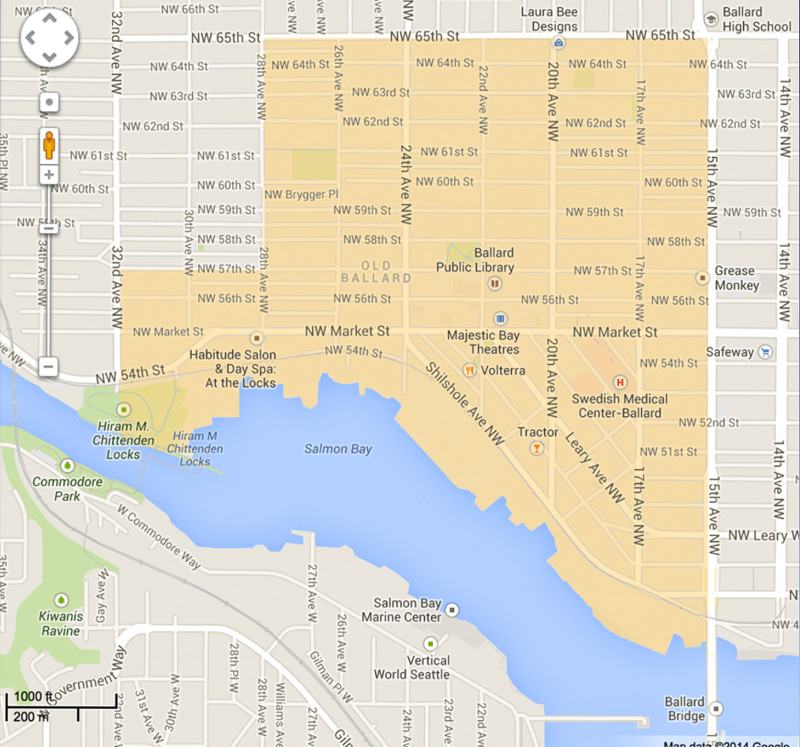
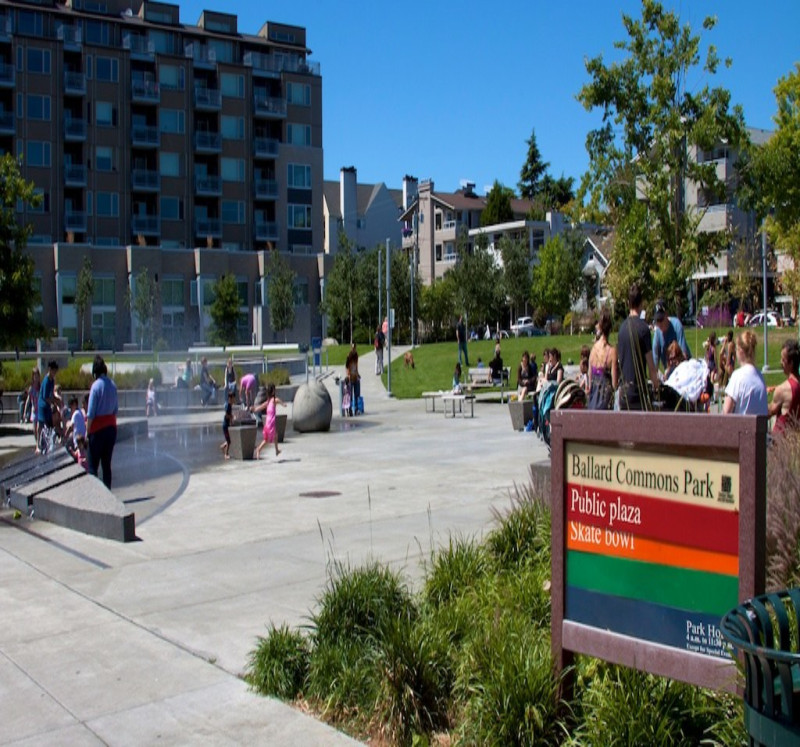
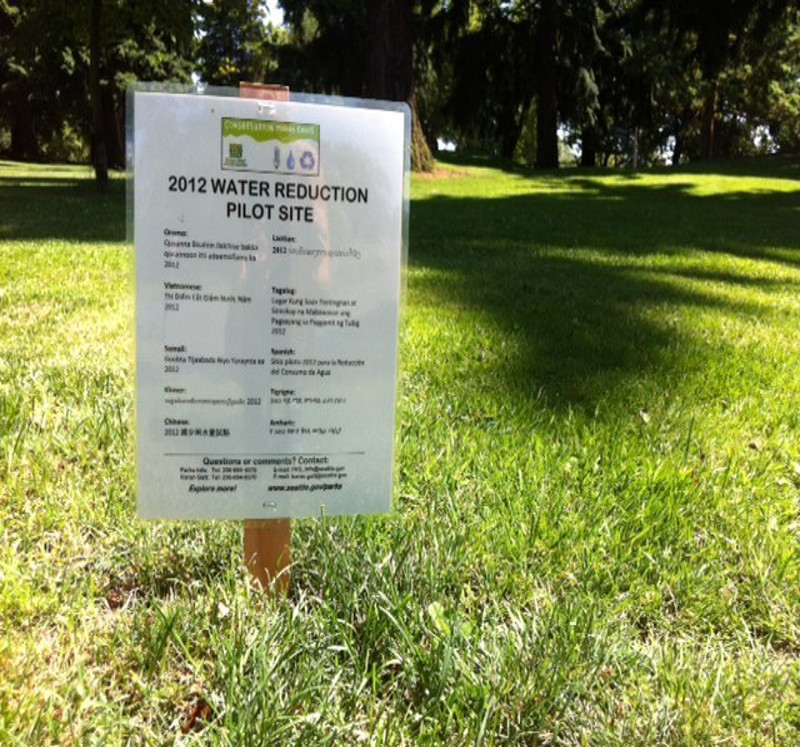

Welcome to the Central Ballard Residents Association
Central Ballard Residents Association (CBRA) was formed in February of 2012 by Ballard residents
to provide a public forum for discussion of community issues and to serve as a voice of Central
Ballard with the community, government and other organizations. CBRA advocates on behalf of its
members to promote a healthy, livable, walkable, and safe community in the neighborhood's historic core.
Issues
In this section find issues related to CBRA.

1
CBRA is following the Comprehensive Plan update as it applies to Ballard
- Adopted position papers on Microhousing and Low-Rise Housing zoning issues.
- Working with Ballard stakeholders and the Department of Planning and
Development on the comprehensive plan for Seattle.
- Working with Ballard stakeholders and the Department of Planning and
Development on the Ballard framework, a comprehensive look at land use
issues in Ballard.

2 PUBLIC SAFETY
Ballard Commons Park -
Working on numerous issues in collaboration with Seattle Parks and
Recreation and Friends of Ballard Commons Park to create a safe and
family friendly environment.
Emergency Communications HUB Volunteer Team -
CBRA is the sponsor of the volunteer Ballard Commons Park HUB team that will gather
after a major disaster in the Ballard Commons Park to assist with the coordination
of available local resources and to relay information between HUB sites and the City.
- The HUB is part of the Ballard Prepares network. Prior to emergencies the HUB team works with
other HUB's to promote public education on emergency preparedness in our community.
North Precinct Advisory -
The Chair of the Public Safety Committee is a member of the Seattle Police Dept. North Precinct
Advisory Committee which meets monthly to expand communication between Police and the community.
Meetings focus on overall community and neighborhood concerns and are held at North Seattle Community
College at 7pm on the first Wednesday of each month.
- CBRA has communicated concerns such as; -lack of regular police presence in the community, public intoxication,
drug use and aggressive behavior in specific areas, long police response time, and the need for more bicycle patrols.

3 HUMAN SERVICES
The Human Services Committee collaborates with local human service providers and
other community members to advocate for critically needed human services in Ballard.
CBRA helps to facilitate the Clean/Healthy/Safe Committee of the Ballard Partnership
which is working to site a permanent public restroom in central Ballard. CBRA also
has served on the Nyer Urness House Advisory Board.
Upcoming Events!
Monthly Membership Meeting
When Thursday July 13 at 7pm
Description Monthly general meeting of the CBRA. All interested persons are invited to attend.
Where: Location of Event is below.
Burke-Gilman Trail Discussion
When Friday July 21 at 3pm
Description Discussion of Burkgelmen construction in Central Ballard. All are invited to voice their opinion.
Where: Location of Event is below.
CONTACT
If you would like to be on our email list, enter your email.